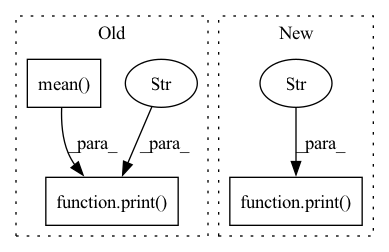

Pattern ID :31651
Before Change
def _forward_pass(fn_input, sequence_input, linear_param0, linear_param1, bn_weight0, bn_bias0, bn_weight1,
bn_bias1):
inp = fn_input.chunk(2, 1)
print( inp[0].mean().item(), inp[1].mean() .item(), "F" )
out = inp[0]
params = [[bn_weight0, bn_bias0, linear_param0], [bn_weight1, bn_bias1, linear_param1]]
outputs = [None, None]After Change
tmp0, tmp1 = ReversibleRNNFunction._calc(out, sequence_input, params[i])
outputs[1 - i] = out = (inp[1 - i] + tmp0) / tmp1
out = torch.cat(outputs, 1)
print("FP" , out.mean().item())
return out
@staticmethod
def _backward_one(out, inp, sequence_input, linear_param):In pattern: SUPERPATTERN
Frequency: 6
Non-data size: 3
Instances Fragment ID: 92292528
Project Name: homebrewnlp/homebrewnlp
Commit Name: 305785f40f94bf50cab2aa506399caf665ff20e4
Time: 2020-07-16
Author: 39779310+ClashLuke@users.noreply.github.com
File Name: module.py
M Class Name: ReversibleRNNFunction
N Class Name: ReversibleRNNFunction
M Method Name: _forward_pass(4)
N Method Name: _forward_pass(8)
M Parent Class: torch.autograd.Function
N Parent Class: torch.autograd.Function
M File Name: module.py
N File Name: module.py
M Start Line: 20
M End Line: 30
N Start Line: 49
N End Line: 57
Before Change
result.append([x[i] for x in measure])
measure = result
measures.append(measure)
print("Different noise levels:" , list(np.mean( np.array(measures), axis=0) )) After Change
result.append([x[i] for x in measure])
measure = result
measures.append(measure)
print("Different noise levels:" , measure)
// print("Different noise levels:", list(np.mean(np.array(measures), axis=0)))
Fragment ID: 92292529
Project Name: pliang279/multibench
Commit Name: 9d2ae3f11c2e06f198b2f03eacfd3f17c0f9f921
Time: 2021-06-02
Author: yuncheng@andrew.cmu.edu
File Name: robustness/all_in_one.py
M Class Name: AnonimousClass
N Class Name: AnonimousClass
M Method Name: general_test(5)
N Method Name: general_test(5)
M Parent Class:
N Parent Class:
M File Name: robustness/all_in_one.py
N File Name: robustness/all_in_one.py
M Start Line: 62
M End Line: 84
N Start Line: 64
N End Line: 84
Before Change
with torch.no_grad():
inp0 = ReversibleRNNFunction._backward_one(out0, out1, sequence_input, bn_weight1, bn_bias1, linear_param1)
inp1 = ReversibleRNNFunction._backward_one(out1, inp0, sequence_input, bn_weight0, bn_bias0, linear_param0)
print( inp0.mean().item(), inp1.mean() .item(), "B" )
with torch.enable_grad():
fn_input = torch.cat([inp0, inp1], 1)
fn_input.detach_()
fn_input.requires_grad_(True)After Change
fn_input = torch.cat([inp0, inp1], 1)
fn_input.detach_()
fn_input.requires_grad_(True)
print("B" , fn_input.mean().item())
args = (fn_input, sequence_input, linear_param0, linear_param1)
grad_out = ReversibleRNNFunction._forward_pass(*args)
grad_out.requires_grad_(True)
grad_out = list( Fragment ID: 92292530
Project Name: homebrewnlp/homebrewnlp
Commit Name: 305785f40f94bf50cab2aa506399caf665ff20e4
Time: 2020-07-16
Author: 39779310+ClashLuke@users.noreply.github.com
File Name: module.py
M Class Name: ReversibleRNNFunction
N Class Name: ReversibleRNNFunction
M Method Name: backward(2)
N Method Name: backward(2)
M Parent Class: torch.autograd.Function
N Parent Class: torch.autograd.Function
M File Name: module.py
N File Name: module.py
M Start Line: 62
M End Line: 89
N Start Line: 84
N End Line: 110
Before Change
result.append([x[i] for x in measure])
measure = result
measures.append(measure)
print("Different noise levels:" , list(np.mean( np.array(measures), axis=0) )) After Change
result.append([x[i] for x in measure])
measure = result
measures.append(measure)
print("Different noise levels:" , measure)
// print("Different noise levels:", list(np.mean(np.array(measures), axis=0)))
Fragment ID: 92292532
Project Name: pliang279/multibench
Commit Name: b0608e5eaf0879f23a6de4d9889fbb4666a799f1
Time: 2021-06-02
Author: yuncheng@andrew.cmu.edu
File Name: robustness/all_in_one.py
M Class Name: AnonimousClass
N Class Name: AnonimousClass
M Method Name: general_test(5)
N Method Name: general_test(5)
M Parent Class:
N Parent Class:
M File Name: robustness/all_in_one.py
N File Name: robustness/all_in_one.py
M Start Line: 62
M End Line: 84
N Start Line: 64
N End Line: 84
Before Change
attention_cache_handle = int(cache_metadata[0, 0].item())
current_sequence_length = int(cache_metadata[0, 1].item())
with self.memory_cache.use_cache(attention_cache_handle) as cache:
print("METADATA:" , cache_metadata, "CACHE", cache.mean() , "CACHE ENTRIES:", len(self.memory_cache._allocated_tensors))
cache[...] += 1
return (inputs[0] + cache.flatten()[0],)
def get_pools(self) -> Sequence[TaskPool]:After Change
assert hidden_states.ndim == 3, "expected hidden states to be 3-dimensional: [batch_size, seq_len, hid_size]"
with self.memory_cache.use_cache(attention_cache_handle) as cache:
print("METADATA:" , cache_metadata)
assert isinstance(self.module, BloomBlock) and cache.shape[0] == 2 and cache.ndim == 5
layer_past = past_k, past_v = cache[0, :, :prefix_length], cache[1, :, :prefix_length]
print(past_k.shape, past_v.shape)
hidden_states, (new_k, new_v) = self.module.forward(hidden_states, layer_past=layer_past, use_cache=True) Fragment ID: 92292524
Project Name: bigscience-workshop/distributed-bloom
Commit Name: 33358bc52b91b452f26e87a653aae8fec88787ab
Time: 2022-06-19
Author: justheuristic@gmail.com
File Name: src/server/backend.py
M Class Name: TransformerBackend
N Class Name: TransformerBackend
M Method Name: inference_step(2)
N Method Name: inference_step(2)
M Parent Class: ModuleBackend
N Parent Class: ModuleBackend
M File Name: src/server/backend.py
N File Name: src/server/backend.py
M Start Line: 32
M End Line: 37
N Start Line: 30
N End Line: 54
Before Change
n_edits += errors
n += len(target)
print("Cur WER: {}".format(wers[-1]))
print("WER:" , np.mean( wers))
df = pd.DataFrame(scores)
print("Mean WAcc for the files is ", np.mean(df["wacc"]))
After Change
n += len(target)
print("Progress {:2.1f} % | Cur WER: {:.1f} %".format(progress, wer * 100))
df = pd.DataFrame(scores)
print("WER:" , n_edits / n)
df = pd.DataFrame(scores)
print("Mean WAcc for the files is ", np.mean(df["wacc"]))
Fragment ID: 92292527
Project Name: rikorose/deepfilternet
Commit Name: 15488ca668ecdb2f59a980d2ac2c998efce659a0
Time: 2022-12-20
Author: h.schroeter@pm.me
File Name: scripts/WAcc_whisper.py
M Class Name: AnonimousClass
N Class Name: AnonimousClass
M Method Name: main(1)
N Method Name: main(1)
M Parent Class:
N Parent Class:
M File Name: scripts/WAcc_whisper.py
N File Name: scripts/WAcc_whisper.py
M Start Line: 28
M End Line: 53
N Start Line: 29
N End Line: 60